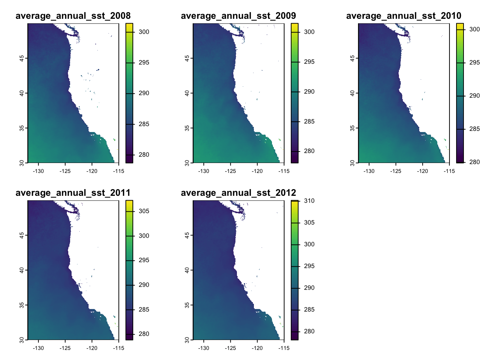
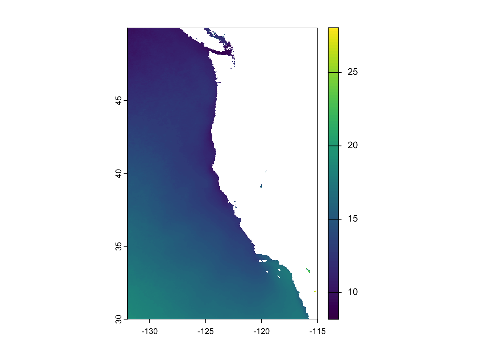
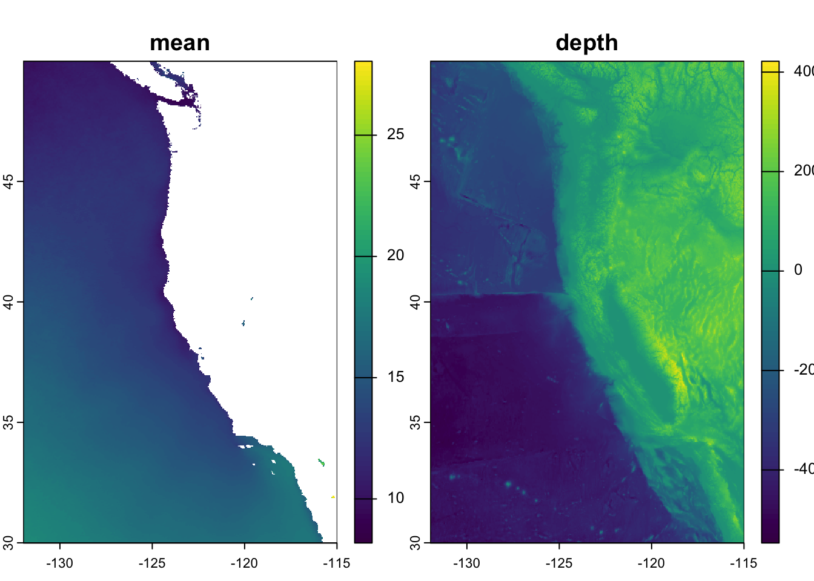
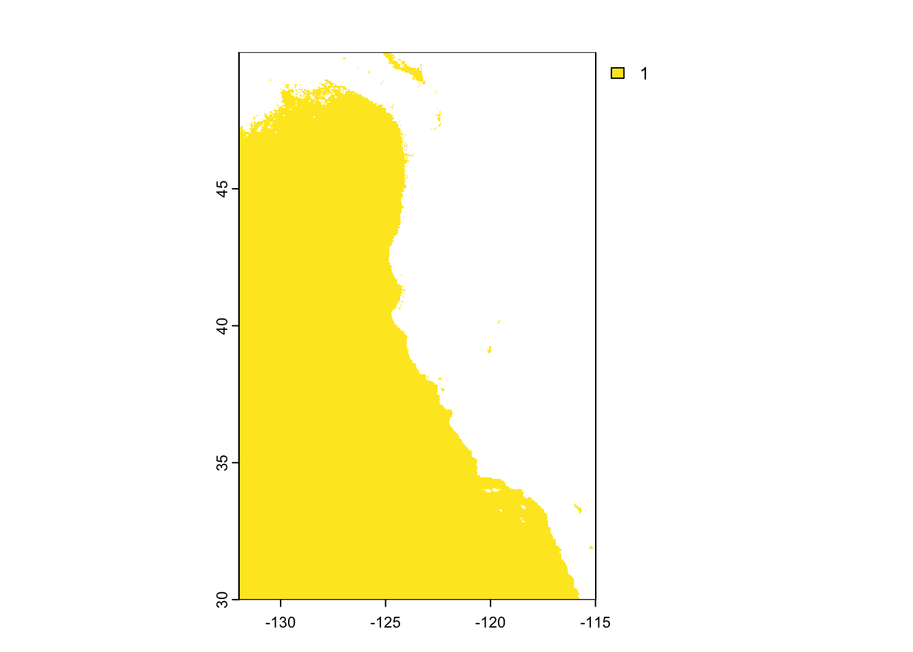
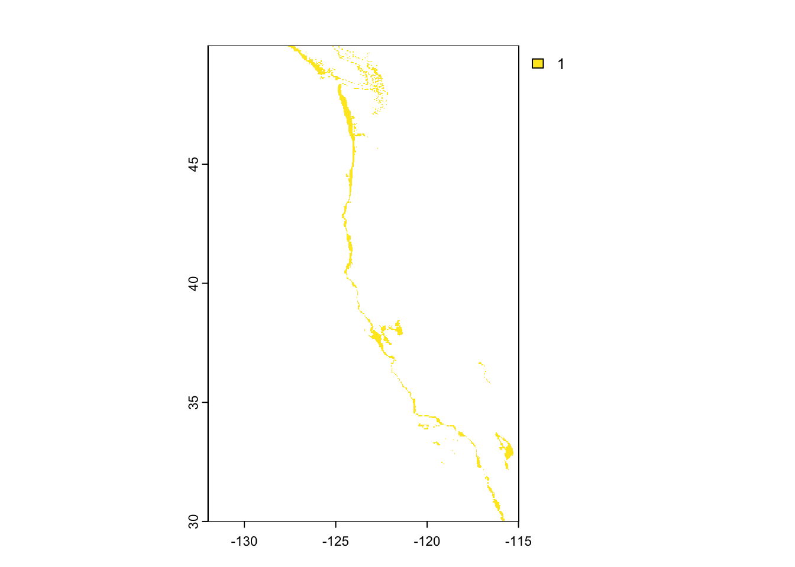
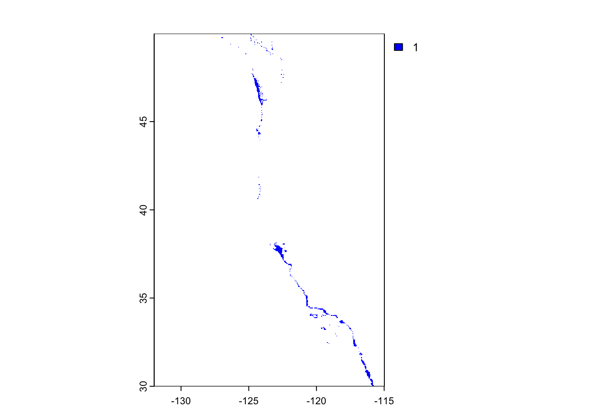
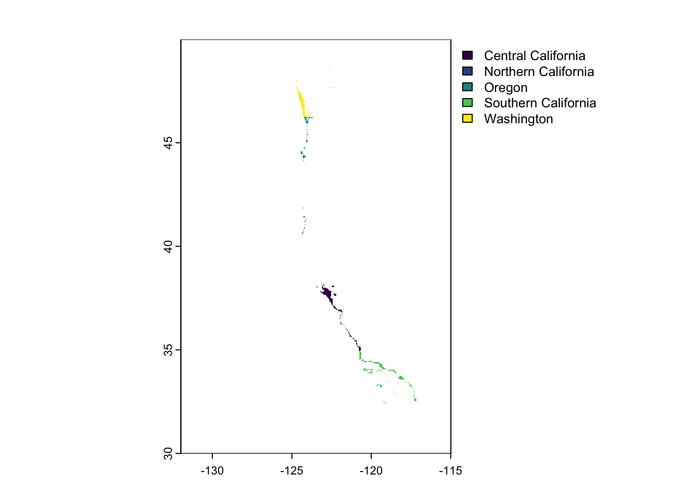
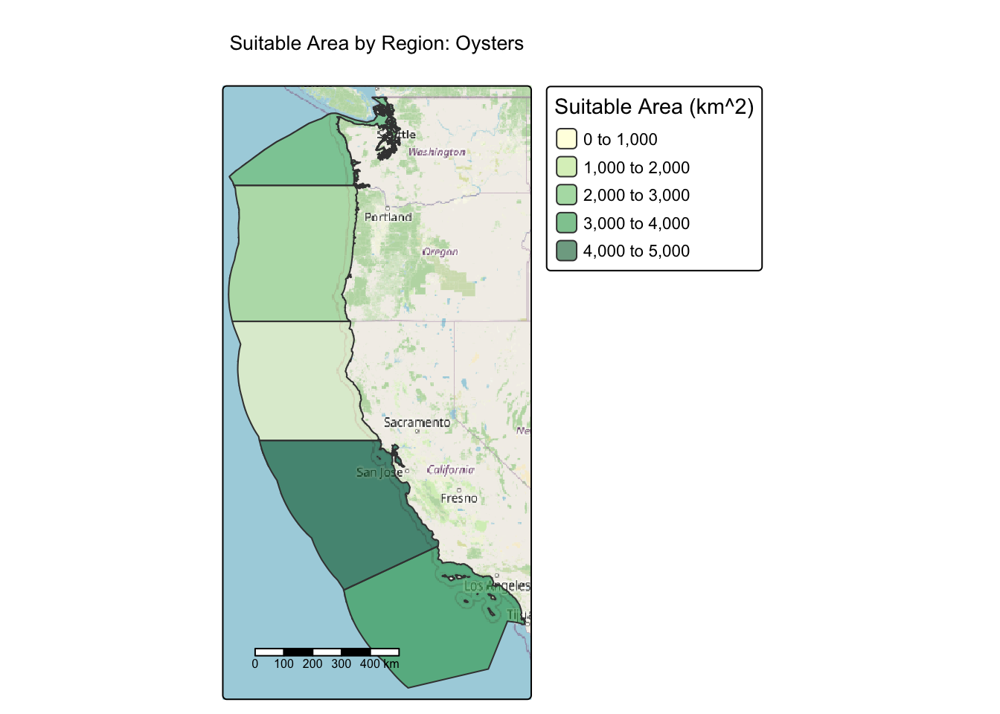
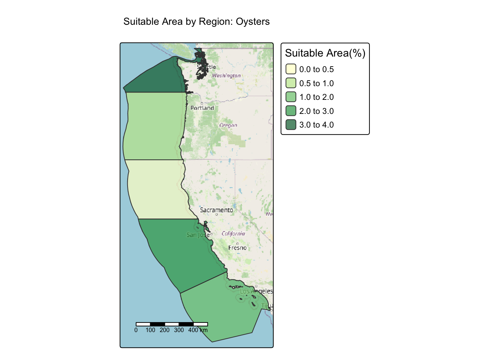

library(terra)
library(sf)
library(dplyr)
library(tidyr)
library(stringr)
library(ggplot2)
library(here)
library(tmap)
library(cowplot)
library(tidyverse)
library(tmap)
library(devtools)
library(tmaptools)
library(maptiles)Quantifying Suitable Growth Area for Aquaculture Species Along the West Coast
MEDS
R
Geospatial
Geospatial Analysis & Remote Sensing Course Project
Quantifying Suitable Growth Area for Aquaculture Species Along the West Coast
Overview
Marine aquaculture has the potential to play an important role in the global food supply as a more sustainable protein option than land-based meat production. Gentry et al. mapped the potential for marine aquaculture globally based on multiple constraints, including ship traffic, dissolved oxygen, bottom depth .
This exercise uses suitable temperature and depth data for each Exclusive Economic Zones (EEZ) on the West Coast of the US to find the area that are best suited to developing marine aquaculture for several species of oysters.
This workflow is then expanded to create a function that can take in temperature and depth limits and produce graphs that show the area in square kilometers and the percentage of each EEZ that is suitable for that species’ suitable conditions.
This repository also contains an R script with the finalized function inside.
Skills used in this workflow:
Combining vector/raster data
Re-sampling raster data
Masking raster data
Map algebra
Data
To download the data used for this project, check out the link in my GitHub Repository!
Sea Surface Temperature
We will use average annual sea surface temperature (SST) from the years 2008 to 2012 to characterize the average sea surface temperature within the region. The data we are working with was originally generated from NOAA’s 5km Daily Global Satellite Sea Surface Temperature Anomaly v3.1.
Exclusive Economic Zones
We will be designating maritime boundaries using Exclusive Economic Zones off of the west coast of US from Marineregions.org.
Bathymetry
To characterize the depth of the ocean we will use the General Bathymetric Chart of the Oceans (GEBCO).1
Workflow:
Import Libraries
Load Datasets
Sea Surface Temperature
Read in the SST Data using the terra::rast() function. Make sure you are in the correct working directory when reading in this data. If you are having issues, you can download my Rmarkdown file from my GitHub repository which uses here() to make this workflow more reproducible, assuming you followed the same folder structure outlined in the repository README.
#Read in each of the Annual SSTs from 2008-2012
sst_2008 <- rast('data/average_annual_sst_2008.tif')
sst_2009 <- rast('data/average_annual_sst_2009.tif')
sst_2010 <- rast('data/average_annual_sst_2010.tif')
sst_2011 <- rast('data/average_annual_sst_2011.tif')
sst_2012 <- rast('data/average_annual_sst_2012.tif')
#Create a rasteer stack from the 5 individual rasters
sst <- c(sst_2008,
sst_2009,
sst_2010,
sst_2011,
sst_2012)
#Plot the raster stack to make sure the data was read in and stacked properly
plot(sst)
Exclusive Economic Zones
Read in the EEZ data using the sf::st_read() function.
It’s important that when we are trying to work with different datatsets, we make sure that they have the same CRS. Take this opportunity to re-project the EEZ data to the same CRS as the SST data so it’s easier to manipulate throughout the workflow.
coast <- st_read('data/wc_regions_clean.shp')
#Reproject the coastal data to the same CRS as the SST Data
coast <- coast %>%
st_transform(crs(sst_2008))Bathymetry
Read in the depth data using the terra::rast() function.
It’s important that when we are trying to work with different datatsets, we make sure that they have the same CRS. Take this opportunity to re-project the depth data to the same CRS as the SST data so it’s easier to manipulate throughout the workflow.
#Read in the depth data and reproject to the same CRS as the SST Data
depth <- rast('data/depth.tif') %>%
project(crs(sst_2008))CRS CHECK:
Check that the CRS of all the datasets match before moving on
#Check that all the CRS match
st_crs(sst) == st_crs(depth)[1] TRUEst_crs(sst) == st_crs(coast)[1] TRUEst_crs(coast) == st_crs(depth)[1] TRUEClean and Wrangle Data
Based on previous research, we know that oysters needs the following conditions for optimal growth:
- sea surface temperature: 11-30°C
- depth: 0-70 meters below sea level
The next step is to process the SST and depth data so that they can be combined. In this case the SST and depth data have slightly different resolutions, extents, and positions. We don’t want to change the underlying depth data, so we will need to resample to match the SST data using the nearest neighbor approach.
- Start by creating a single layer that has the average sea surface temperature
#Create a new raster that has the average SST converted to Celcius
sst_stac <- mean(sst - 273.15)
#Plot the new stack to check that there is only one map in the output and the temp range is reasoanable for Celcuis
plot(sst_stac)
Crop depth raster to match the extent of the SST raster
#create a bounding box using the extents of the SST data bbox <- st_bbox(sst) #Crop the depth data to just our area of interest depth <- crop(depth, bbox)Re-sample the depth data to match the resolution of the SST data using the nearest neighbor approach. You can check that the depth and SST match in resolution, extent, and coordinate reference system by stacking the raster layers
#Resample the depth data, use method = "near" to use the nearest neighbor approach depth_resampl <- resample(depth, y = sst_stac, method = "near") #Check that the depth data was resampled by stacking the rasters sst_depth <- c(sst_stac,depth_resampl) #Check our stacked dataset by plotting plot(sst_depth)
Find suitable locations
In order to find suitable locations for marine aquaculture, we’ll need to find locations that are suitable in terms of both SST and depth. We can achieve this by reclassifying the SST and depth data into locations that are suitable for oysters.
#Create a reclassification matrix for stuitable temperatures
rcl_temp <- matrix(c(-Inf, 11, NA,
11, 30, 1,
30, Inf, NA ), ncol = 3, byrow = TRUE)
#Reclassify the temperature data
temp_reclass <- classify(sst_stac, rcl = rcl_temp)
#Plot to see the reclassification worked
plot(temp_reclass)
#Create a reclasification matrix for the suitable depth
rcl_depth <- matrix(c(-Inf, -70, NA,
-70, 0 , 1,
0, Inf, NA), ncol = 3, byrow = TRUE)
#Reclassify the Depth data
depth_reclass <- classify(depth_resampl, rcl = rcl_depth)
#Plot to see the reclassification worked
plot(depth_reclass)
Then use the laap() function to find the areas that have suitable temperatures and depths for oysters. Using the multiply function inside lapp() creates a raster that has 1s where both conditions are TRUE and 0s when one or more conditions are FALSE.
#create a function to multiply two inputs
multiply = function(x,y){
x*y
}
#Use Lapp to create an overlay of the reclassified data
oyster_cond <- lapp(c(temp_reclass, depth_reclass), fun = multiply)
#Plot the overlay to check the area
plot(oyster_cond, col = 'blue')
Find the suitable area per EEZ for oysters
Now that our data is cleaned and wrangled, we can begin our analysis to determine the suitable area per EEZ region. Start by using our oyster_cond variable to create. amaks of suitable areas. Then use the mask to crop the EEZ data.
#transform the coastal data into a raster
coast_rast <- rasterize(coast, sst, field = 'rgn')
#Create a mask using the selected areas for suitable pyster conditions
mask <- mask(coast_rast, oyster_cond)
#Use the mask to crop the coastal data to our area of interest (suitable areas)
EEZ <- crop(mask, coast_rast)
#Check that the raster was cropped correctly
plot(EEZ)
Now we can use the cellSize() and zonal() finctions to calculcate the total area of each EEZ and the total suiatble areas for oysters in each EEZ
#Use the cellSize function to fin the area of each cell
EEZ_area <- cellSize(EEZ)
#Use the zonal function to calculate the sum of the suitable areas in each region
suit_zones = zonal(EEZ_area, EEZ, fun = 'sum', na.rm = TRUE)
suit_zones rgn area
1 Central California 4069876613
2 Northern California 178026784
3 Oregon 1074271959
4 Southern California 3757284868
5 Washington 2378313748#Use the cellSize function to fin the area of each cell
total_area <- cellSize(coast_rast)
#Use the zonal function to calculate the sum of the total areas in each region
zones = zonal(total_area, coast_rast, fun = 'sum', na.rm = TRUE)
zones rgn area
1 Central California 202779854223
2 Northern California 163715001370
3 Oregon 179866415384
4 Southern California 206535860068
5 Washington 67813688037Create one singular dataframe with the total area per region(km2), total suitable area(km2), and percentage of suitable area(%)
#Add the suitable area stats to the new variable zonal_stats
zonal_stats <- suit_zones %>%
#Rename the area column to suitable area for clarity
rename(suitable_area = area) %>%
#Convert to km2
mutate(suitable_area = (suitable_area/1000000)) %>%
#Add a new column ot the dataframe using the total area stats calculated above
add_column(zones$area) %>%
#Rename that area column to total-area for clarity
rename(total_area = 'zones$area') %>%
#Convert to km2
mutate(total_area = (total_area/1000000)) %>%
#Add a new column that calculates the percentage of each region thats suitable
mutate(pct_suitable = ((suitable_area/total_area)*100))
#Print the output of the new dataset
zonal_stats rgn suitable_area total_area pct_suitable
1 Central California 4069.8766 202779.85 2.0070419
2 Northern California 178.0268 163715.00 0.1087419
3 Oregon 1074.2720 179866.42 0.5972610
4 Southern California 3757.2849 206535.86 1.8191925
5 Washington 2378.3137 67813.69 3.5071293#Add the geometry to the zonal stats dataset by using a left joim
zonal_rast <- left_join(coast, zonal_stats, by = 'rgn') Visualize the Results
Now that we have results, we need to present them! Use the super fun package tmap to create graph of total suitable area(km2), and percentage of suitable area(%) with updated titles, legends, etc.
#Create a map to plot the suiatable area in km^2
tm_shape(zonal_rast)+
tm_polygons(fill = 'suitable_area', fill_alpha = 0.6, #Add geometry and opacity
fill.scale = tm_scale(breaks = c(0,1000,2000,3000,4000,5000), #Add breaks, and legend title
values = "YlGn"), #Add Color scheme
fill.legend = tm_legend(title = 'Suitable Area (km^2)'))+ #Add legend title
tm_title(text = "Suitable Area by Region: Oysters")+ # Add figure title
tm_scalebar(position = c('left','bottom'))+ #Add a scalebar
tm_basemap(server = "OpenStreetMap") #Add a basemap[cols4all] color palettes: use palettes from the R package cols4all. Run
`cols4all::c4a_gui()` to explore them. The old palette name "YlGn" is named
"brewer.yl_gn"
Multiple palettes called "yl_gn" found: "brewer.yl_gn", "matplotlib.yl_gn". The first one, "brewer.yl_gn", is returned.
[plot mode] fit legend/component: Some legend items or map compoments do not
fit well, and are therefore rescaled.
ℹ Set the tmap option `component.autoscale = FALSE` to disable rescaling.
#Create a map to show the percent suitable area
tm_shape(zonal_rast)+
tm_polygons(fill = 'pct_suitable', fill_alpha = 0.7, #Add geometry and opacity
fill.scale = tm_scale(breaks = c(0,0.5,1,2,3,4), #Add breaks
values = "YlGn"), #Add color scheme
fill.legend = tm_legend(title = 'Suitable Area(%)'))+ #Add legend title
tm_title(text = "Suitable Area by Region: Oysters")+ #Add figure title
tm_scalebar(position = c('left','bottom'))+ #Add a scalebar
tm_basemap(server = "OpenStreetMap") #Add a basemap
Broaden the workflow:
Now that we’ve developed a workflow for one group of species, we can update the workflow to create a function that would allow you to reproduce your results for other species.
Run the function for a species of your choice! You can find information on species depth and temperature requirements on SeaLifeBase.
species_suitable_area = function(species_name, min_temp_C, max_temp_C, min_depth_m, max_depth_m){
#Create a reclassification matrix for Temperature
rcl_temp <- matrix(c(-Inf, min_temp_C, NA,
min_temp_C, max_temp_C, 1,
max_temp_C, Inf, NA ), ncol = 3, byrow = TRUE)
#Reclassify the temp data
temp_reclass <- classify(sst_stac, rcl = rcl_temp)
#Create a reclassification matrix for depth
rcl_depth <- matrix(c(-Inf, (max_depth_m*(-1)), NA,
(max_depth_m*(-1)), (min_depth_m*(-1)), 1,
(min_depth_m*(-1)), Inf, NA), ncol = 3, byrow = TRUE)
#reclassify the depth data
depth_reclass <- classify(depth_resampl, rcl = rcl_depth)
#Create a function to multiply two outputs
multiply = function(x,y){
x*y
}
#Use lapp() to create an overlay from the product of the two reclassified datasets
species_cond <- lapp(c(temp_reclass, depth_reclass), fun = multiply)
#Make a mask from the overlay
mask <- mask(coast_rast, species_cond)
#Use the mask to crop the coastal data to our area of interest (suitable areas)
EEZ <- crop(mask, coast_rast)
#Use the cellSize function to fin the area of each cell
EEZ_area <- cellSize(EEZ)
#Use the zonal function to calculate the sum of the suitable areas in each region
suit_zones = zonal(EEZ_area, EEZ, fun = 'sum', na.rm = TRUE)
#Use the cellSize function to fin the area of each cell
total_area <- cellSize(coast_rast)
#Use the zonal function to calculate the sum of the total areas in each region
fun_zones <<- zonal(total_area, coast_rast, fun = 'sum', na.rm = TRUE)
#Add the suitable area stats to the new variable zonal_stats
zonal_stats <- suit_zones %>%
#Rename the area column to suitable area for clarity
rename(suitable_area = area) %>%
#Convert to km2
mutate(suitable_area = (suitable_area/1000000)) %>%
#Add a new column to the dataframe using the total area stats calculated above
add_column(fun_zones$area) %>%
#Rename that area column to total-area for clarity
rename(total_area = 'fun_zones$area') %>%
#Convert to km2
mutate(total_area = (total_area/1000000)) %>%
#Add a new column that calculates the percentage of each region thats suitable
mutate(pct_suitable = ((suitable_area/total_area)*100))
#Add the geometry to the zonal stats dataset by using a left joim
zonal_rast <- left_join(coast, zonal_stats, by = 'rgn')
area_plot<- tm_shape(zonal_rast)+
tm_polygons(fill = 'suitable_area', fill_alpha = 0.6, #Add geometry and opacity
fill.scale = tm_scale(values = "YlGn"), #Add Color scheme
fill.legend = tm_legend(title = 'Suitable Area (km^2)'))+ #Add legend title
tm_title(text = paste0("Suitable Area by Region: ", species_name))+ # Add figure title
tm_scalebar(position = c('left','bottom'))+ #Add a scalebar
tm_basemap(server = "OpenStreetMap") #Add a basemap
pct_plot <- tm_shape(zonal_rast)+
tm_polygons(fill = 'pct_suitable', fill_alpha = 0.7, #Add geometry and opacity
fill.scale = tm_scale(values = "YlGn"), #Add color scheme
fill.legend = tm_legend(title = 'Suitable Area(%)'))+ #Add legend title
tm_title(text = paste0("Suitable Area by Region: ", species_name))+ #Add figure title
tm_scalebar(position = c('left','bottom'))+ #Add a scalebar
tm_basemap(server = "OpenStreetMap") #Add a basemap
return(list(area_plot,pct_plot))
}Footnotes
GEBCO Compilation Group (2022) GEBCO_2022 Grid (doi:10.5285/e0f0bb80-ab44-2739-e053-6c86abc0289c).↩︎
Citation
BibTeX citation:
@online{childers2023,
author = {Childers, Heather},
title = {Quantifying {Suitable} {Growth} {Area} for {Aquaculture}
{Species} {Along} the {West} {Coast}},
date = {2023-12-09},
url = {hmchilders.github.io/Geospatial_Blogs/2023-12-9},
langid = {en}
}
For attribution, please cite this work as:
Childers, Heather. 2023. “Quantifying Suitable Growth Area for
Aquaculture Species Along the West Coast.” December 9, 2023. hmchilders.github.io/Geospatial_Blogs/2023-12-9.